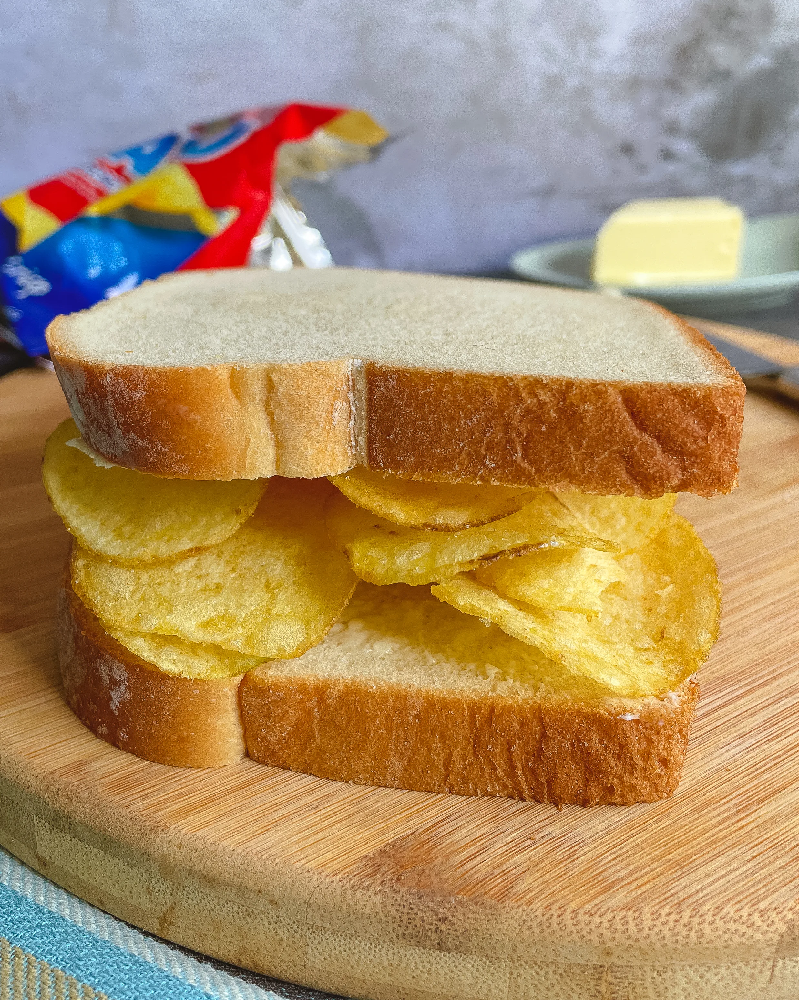

Crisp sandwich

The following instructions come with your brain, you don't need this website to tell you how to make a crisp sandwich.
Description
It's a sandwich with crisps in it.
Ingredients
You can use the following ingredients
But you could also use
- Ketchup
- Cornflakes
- Worcestershire sauce "crisps"
- Head of lamb
- Roasted shoe
- Soy sauce
- Noodles
- Cadbury chocolate
- Milk (especially recommended if you are lactose intolerant)
- Boiled shoelace
- Ribena
- Or anything else you want really.
All of the above ingredients have been used by people out there in sandwiches they slapped together in 10 seconds, so it is actually more authentic to take whatever rubbish you have lying around and put it in the sandwich.
Such as crisps, which is where the sandwich gets its name from.
Steps
- Take a slice of bread.
- Put crisps on it.
- Put the second slice of bread on top(optional).
- Eat it(optional).
You have now learnt how to make a crisp sandwich.
Back to main page